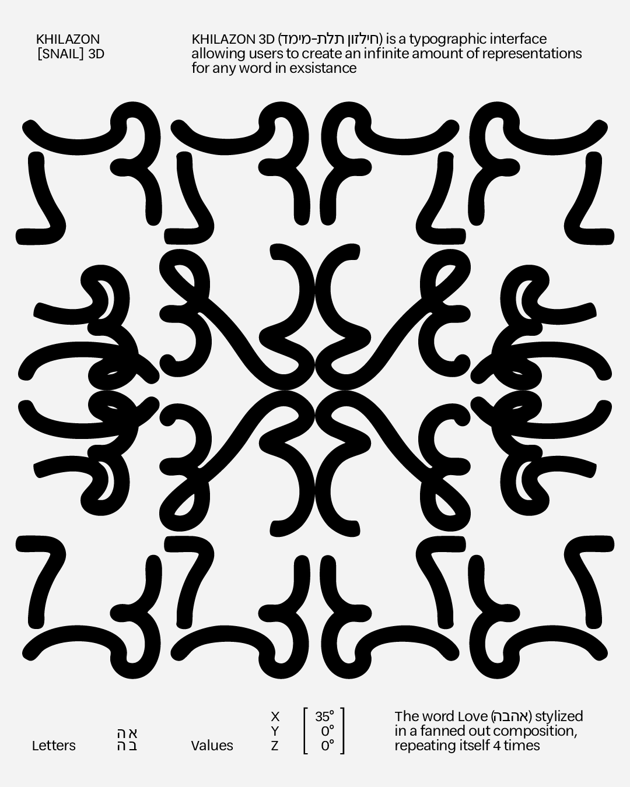
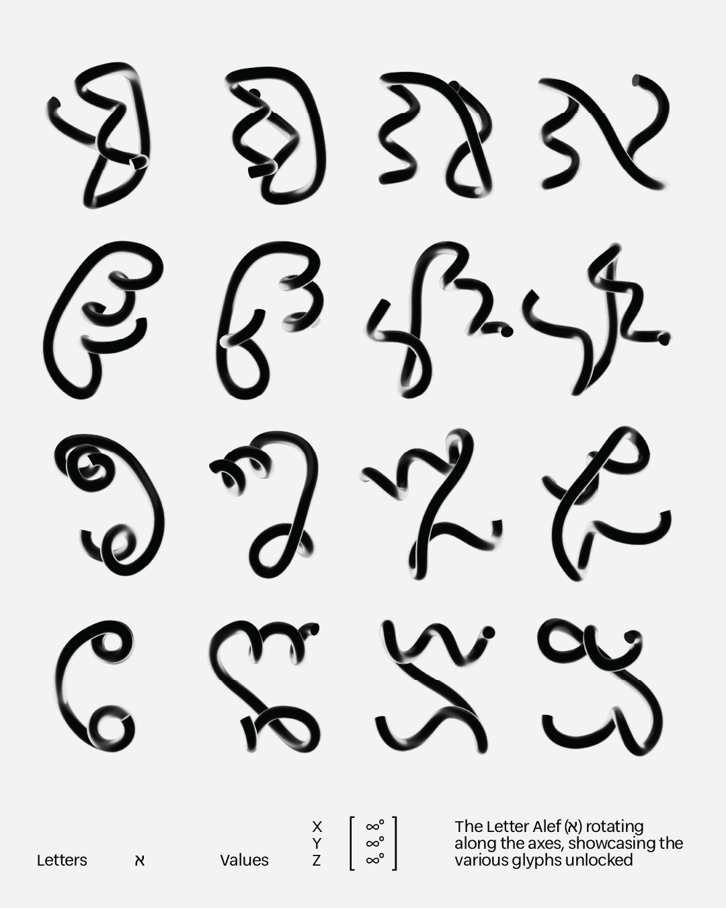

Based on the Khilazon typeface, this experimental typographic tool reinterprets the font within a 3D environment. By allowing users to rotate the letterforms, it unlocks endless visual representations for every character in the Hebrew alphabet. The live tool is fully interactive, and the accompanying gallery showcases the project's promotional video materials.
The application was developed in JavaScript with the assistance of generative AI tools, helping transition the project from its initial concept to a fully functional state.

